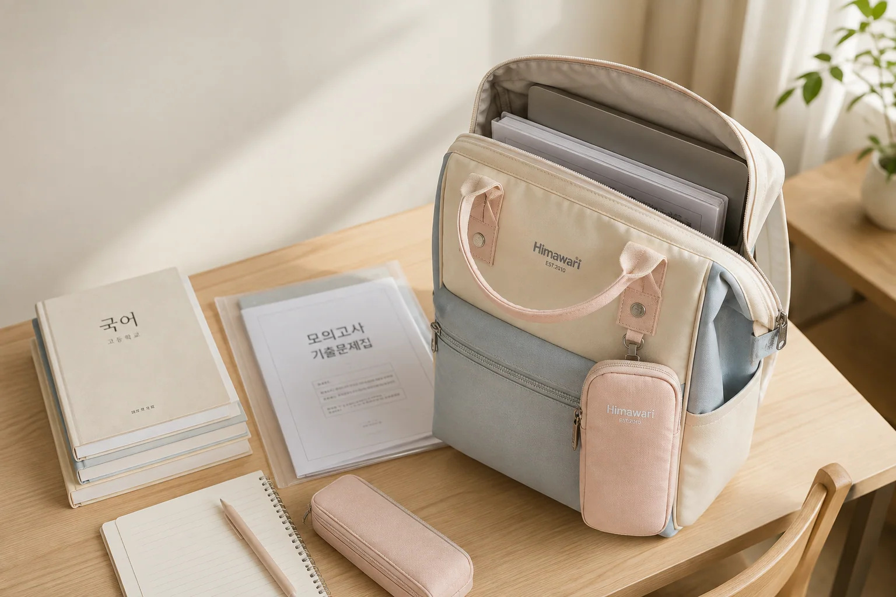

책·서류가 구겨지지 않는 백팩 수납법: 모서리를 지키는 5단계

책과 서류는 백팩 안에 들어가기만 하면 끝이라고 생각하기 쉽지만, 모서리가 접히고 표지가 휘는 원인은 대부분 크기보다 배치에 있습니다. 하루 동안 꺼내는 순서와 무게를 기준으로 자리를 정하면 교과서, 노트와 A4 출력물을 더 반듯하게 유지할 수 있습니다.
1. 가장 큰 파일이 들어가는지 먼저 확인하세요
가방의 외부 치수만 보지 말고 실제 수납칸 입구와 안쪽 너비를 확인합니다. A4 클리어 파일은 종이보다 여유가 필요하고, 지퍼 곡선이 있는 상단에서는 모서리가 걸릴 수 있습니다. 평소 쓰는 가장 큰 파일을 기준으로 세워 넣고 지퍼가 힘없이 닫히는지 살펴보세요.
노트북도 함께 넣는다면 기기와 종이를 같은 칸에 억지로 끼우지 않습니다. 노트북 수납을 고르는 기준은 노트북 백팩 수납칸 점검표에서 자세히 볼 수 있습니다.
2. 종이는 반드시 한 번 더 감싸세요
낱장은 단단한 파일이나 얇은 도큐먼트 케이스에 넣습니다. 과제물과 안내문을 과목별로 너무 많이 나누기보다 오늘 쓸 것과 보관할 것을 구분하면 부피도 줄어듭니다. 파일을 고를 때는 잠금 장식이 튀어나와 다른 책을 누르지 않는지 확인하세요.
3. 무거운 책은 등판 가까이에 세우세요
큰 교과서와 노트는 넓은 면이 등판과 평행하도록 세워 넣습니다. 무게가 몸에서 멀어질수록 가방이 뒤로 당기고 안의 물건도 더 많이 움직입니다. 무거운 순서대로 등판 쪽에서 바깥쪽으로 놓되, 지퍼가 책 위를 압박할 만큼 높이 쌓지 않습니다.
짐을 넣은 뒤에는 양쪽 어깨끈 길이와 흔들림도 확인하세요. 백팩 어깨끈 조절법을 따라 실제 짐을 넣은 상태에서 맞추는 것이 좋습니다.
4. 모서리를 누르는 작은 물건을 분리하세요
열쇠, 충전기, 금속 자와 보조배터리는 책 사이에 흩어두지 말고 앞주머니나 파우치로 옮깁니다. 필통도 책 위에 가로로 얹기보다 남은 옆 공간에 세우면 표지가 눌리는 일을 줄일 수 있습니다. 케이블은 충전기·케이블 수납법처럼 종류별로 묶어 두세요.
5. 빈 공간은 가볍게 받치고 매일 비우세요
가방이 넓어 파일이 옆으로 쓰러진다면 부드러운 파우치나 얇은 겉옷으로 옆을 가볍게 받칩니다. 단, 종이가 휘도록 꽉 채우는 것은 피합니다. 귀가 후에는 안내문과 영수증을 꺼내고 다음 날 필요한 책만 다시 담아 두면 무게와 구김을 함께 줄일 수 있습니다.
등교 전 30초 체크리스트
- A4 파일이 지퍼에 걸리지 않고 반듯하게 서 있나요?
- 무거운 책이 등판 쪽에 모여 있나요?
- 열쇠와 충전기가 책 모서리에서 떨어져 있나요?
- 물병 뚜껑이 잠겼고 종이와 분리되어 있나요?
- 오늘 쓰지 않는 책과 종이를 꺼냈나요?
매일 같은 자리를 정해 두면 아이도 스스로 가방을 챙기기 쉬워집니다. 신학기 가방 자체를 고르는 중이라면 아이 백팩 선택 가이드와 Himawari 학생용 제품을 함께 비교해 보세요.
참고·안내
- Himawari 학생용 백팩 제품 정보
- 대표 이미지는 Himawari No.1027 제품을 바탕으로 만든 연출 이미지입니다. 실제 수납칸과 치수는 제품 상세 정보를 확인해 주세요.
자주 묻는 질문
A4 서류는 백팩 어디에 넣는 것이 좋나요?
서류는 단단한 파일에 넣고 등판 쪽의 넓고 평평한 공간에 세워 두는 편이 좋습니다. 제품의 수납 구조와 파일 크기는 먼저 확인하세요.
무거운 책은 위에 넣어도 되나요?
무거운 책은 등과 가까운 쪽에 세워 무게가 뒤로 쏠리지 않게 하고, 작은 물건이 책 모서리를 누르지 않도록 분리하세요.
가방 안이 남으면 종이가 더 잘 구겨지나요?
넓은 빈 공간에서 파일이 기울면 모서리가 눌릴 수 있습니다. 가벼운 파우치로 옆 공간을 받치되 지나치게 꽉 채우지는 마세요.